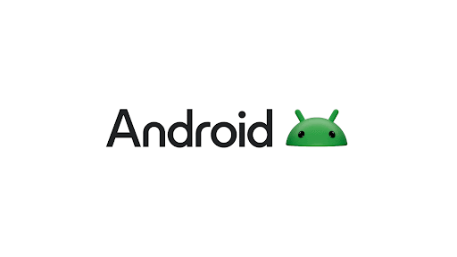
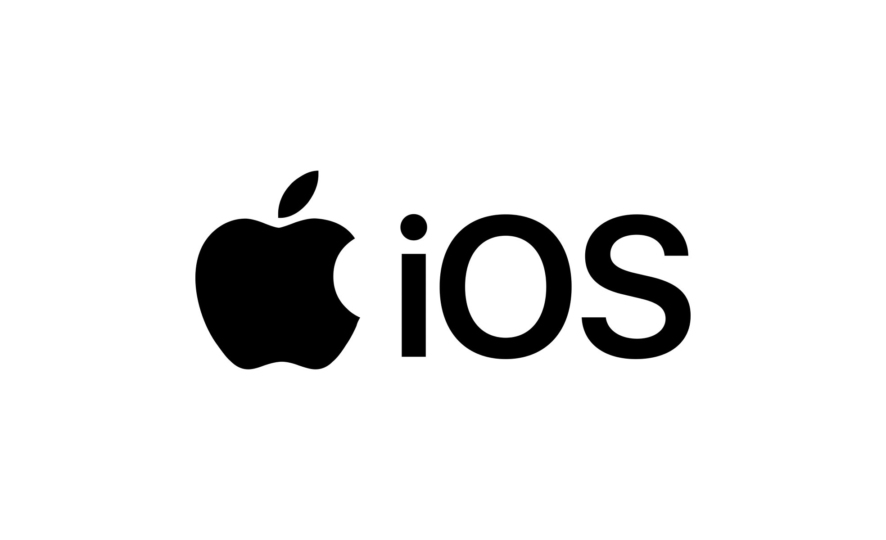
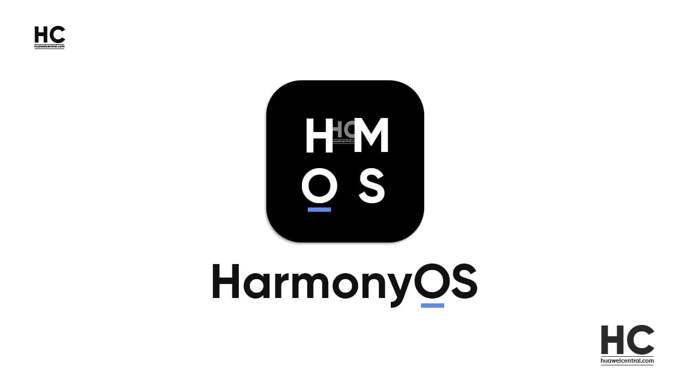

Десктопные ОС
Microsoft - Windows

Наиболее распространенная ОС
Linux

Операционная система (ОС, Operating system, OS) — это специальный набор программ, благодаря которому все системы компьютера взаимодействуют как между собой, так и с пользователем. Простыми словами, операционная система – это основа, без которой невозможно работать ни с одной программой на компьютере. Приложения и сервисы (например, текстовые редакторы, таблицы, интернет-браузеры, базы данных) просто не запустятся, если на компьютере не будет ОС.
Microsoft - Windows
Наиболее распространенная ОС
Linux
Google - Android
Apple - IOS
Huawei - HarmonyOS
